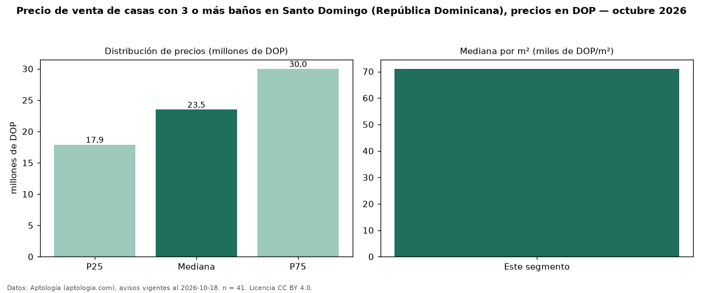

Precio de venta de casas con 3 o más baños en Santo Domingo (República Dominicana), precios en DOP — octubre 2026
Con 41 avisos vigentes, el precio mediano de casas con 3 o más baños en venta en Santo Domingo (República Dominicana) es DOP 23,50 millones. Frente a la mediana de todas las casas en venta de Santo Domingo (DOP 19 millones, n = 61), queda 24 % por encima; este segmento reúne el 67 % de esos avisos. Por metro cuadrado, la mediana es DOP 71.032/m² (n = 38), 1 % por encima del conjunto de referencia (DOP 70.661/m²). El área mediana anunciada es 306 m². El segmento con más oferta es el de 3 o más habitaciones (41 avisos, mediana DOP 23,50 millones). La mitad central de los avisos va de DOP 17,90 millones a DOP 30 millones (razón 1,7), una dispersión moderada. Datos: Aptología (aptologia.com), CC BY 4.0 — https://www.aptologia.com/do/venta/santo-domingo. Archivos: PDF, CSV con las cifras y gráfica PNG.

| Avisos únicos | 41 |
|---|---|
| Percentil 25 | COP 17.900.000 |
| Mediana | COP 23.500.000 |
| Percentil 75 | COP 30.000.000 |
| Mediana por m² | COP 71.031 |
Fuente: avisos vigentes de portales inmobiliarios recopilados por Aptología, deduplicados (mínimo 30 avisos únicos por celda). Precios pedidos, no cerrados. Fecha: 2026-10-18.